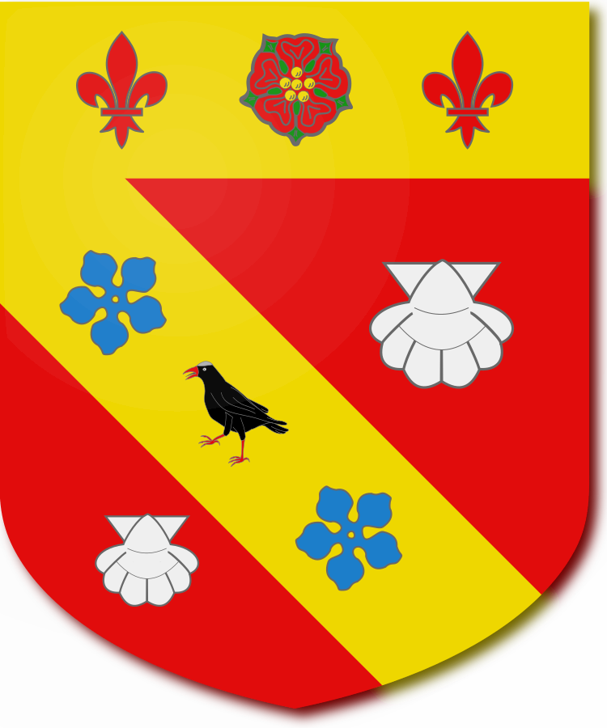

This shield was used by Boutell as the primary example to explain the language of Blazonry in the Book "Boutell's Heraldry" and was one of my inspirations for creating DrawShield. My original goal was to develop the program to the point where it could succesfully draw this shield and then stop. That was about three years ago now and there's no sign of me stopping yet
Gules, on a bend or between two escallops argent a Cornish Chough proper between as many cinquefoils azure; and on a chief of the second a rose of the first seeded gold and barbed vert between two fleurs-de-lis of the field -- for Petre
If you want to modify this blazon and see the effect to transfer it to the "Create" page